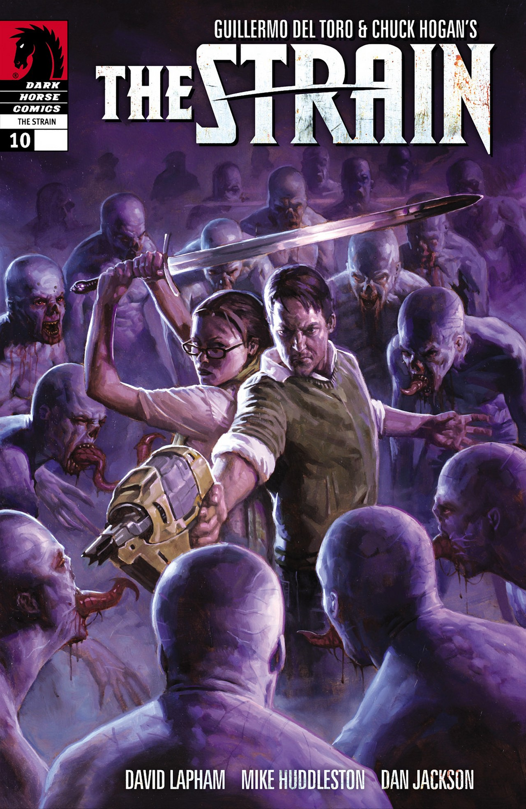

Inferno
 Livro de ficção de Dan Brown
Livro de ficção de Dan Brown
Clique para ver o preço
R$ 34,99,
A culpa é das estrelas
 Livro de ficção de Dan Brown
Livro de ficção de Dan Brown
Clique para ver o preço
R$ 15,99,
Harry Potter e as Reliquias da Morte
Livro de fantasia de J.K Rowling
Clique para ver o preço
R$ 39,90,
The Strain

Livro de terror de Guillermo Del Toro
Clique para ver o preço
R$ 25,90,